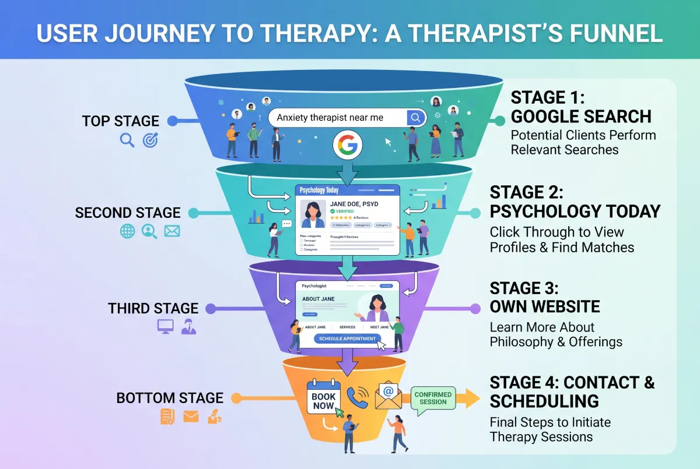

Every therapist thinking about their digital presence faces this question at some point. Psychology Today is right there. It works. It seems to bring in patients. Your own site is an investment of time and money. Why build one?
The honest answer is that both hold value. But they do completely different things. Rely exclusively on one, and you lose what the other provides.
In this article, we compare the two honestly. We don't glorify one at the expense of the other. The goal is to understand what each tool does—and how to use them together to get the best results.
What Psychology Today Is and How It Works
Psychology Today is a mental health professional directory. Thousands of therapists create profiles. Users search for professionals based on location, specialty, insurance, and other criteria.
It proves useful because the platform already owns established SEO. It ranks high on Google for searches like "therapist in New York." Have a profile there, and you appear in those results without doing any digital heavy lifting yourself.
This is the strength of Psychology Today: it brings visibility fast, with zero effort on your part.
Where Psychology Today Falls Short
Let’s talk about limits. They exist, and they matter.
You Don't Control the Comparison
Someone searching for a therapist on Psychology Today views multiple profiles simultaneously. Yours appears right next to dozens of others. Patients choose based on a single photo, a one-line description, and a price tag. You lack the space to tell your story, explain your method, and build trust before the patient picks you.
You Compete Inside the Platform
When someone visits Psychology Today, their primary goal is to compare. The platform is built for exactly that. This means even if they find you, they will likely browse others before deciding. Conversely, someone visiting your own site is already alone with you.
You Don't Build Your Own SEO
Every visitor coming through Psychology Today belongs to them. It does not strengthen your digital presence. It does not help your site rank. You build the platform's authority, not your own.
You Don't Control the Changes
Psychology Today has changed prices, rules, and algorithms in the past. They will do it again. Every platform update directly impacts your visibility. You have zero say in those decisions.
What Your Own Site Does That Psychology Today Doesn't
Your own site acts as the exact opposite of Psychology Today wherever the directory shows weakness.
You Own the Stage
Someone landing on your site sees no one else. No competitors exist on the same page. They make their decision based entirely on what you present. That creates a massive difference compared to a directory.
You Build Trust Before the First Contact
Your site gives you space. You can write about your method. Explain your focus. Show who you are as a person and a professional. All of this builds deep trust long before someone sends that first email.
The SEO You Build Belongs to You
Every Google visitor landing on your site strengthens your authority. Every article you write, every page you add, every year that passes makes your site more visible. No one can take that away from you.
You Control Every Detail
Colors, language, information placement, what the visitor sees first, where they end up, what they do. On your own site, you decide everything. And you can optimize every decision based on real results.
Which Brings More Clients?
This is the question everyone wants answered. The honest truth: it depends on what stage you are in.
In the beginning, Psychology Today likely delivers results faster. You don't need to build SEO. You upload your profile and appear immediately.
Long-term, a well-designed site with strong SEO crushes Psychology Today. Because you rank for highly targeted searches rather than generic directory queries. Someone typing "CBT therapist for anxiety Brooklyn" has a very specific need. If your site covers exactly that, you rank, and you win that patient.
The Practical Comparison
| Criteria | Psychology Today | Your Own Site |
|---|---|---|
| Speed of results | Immediate | 3 to 9 months for SEO |
| Competition | Compete inside the platform | You are alone on the page |
| Presence control | Minimal | Complete |
| Trust building | Limited | Full |
| SEO value | Builds the platform | Builds your brand |
| Third-party dependence | Total | None |
| Google Ads capability | No | Yes |
| Cost | Monthly subscription | One-time build cost |
The Mistake Most Therapists Make
The most common mistake isn't choosing one over the other. It's treating them as competing tools.
Many therapists use Psychology Today. Some have a site but fail to optimize it. You rarely see someone using both strategically, letting one feed the other.
A dominant strategy uses both. Psychology Today captures quick visibility and patients searching within directories. Your own site builds trust, ranks for targeted searches, and converts visitors into patients at a much higher rate.

How They Work Together in Practice
Let’s look at an example. A New York therapist runs both a Psychology Today profile and a personal site.
Someone searches "therapist in Manhattan for anxiety." They look at the results. They spot the therapist's Psychology Today profile. They click, read a few lines, and want to know more. They see the link to the therapist's personal site and click through.
Now they are on your site. They see a clear presentation. They read about your method. They notice your exact specialization in anxiety. They feel this person understands them. They send an email.
This journey fails if the therapist only has Psychology Today, because the visitor would just keep looking at other options. It also fails if they only have a site with no SEO traction yet, because the initial discovery might happen much later.
When to Prioritize Your Own Site
If you must choose what to tackle first, base your answer on where you are today.
Just starting out and need patients right now? Start with Psychology Today. It's fast and it works immediately.
Already have a patient base and want to build something stable? Invest in your site. You start building SEO. You create a digital presence entirely independent of anyone else.
Have both, but haven't updated your site in years? That is your most urgent task. An outdated, neglected site does more harm than good.
The Cost of Inaction
Every month you run Psychology Today without a personal site is a month you build nothing of your own. The platform takes its monthly fee. It feeds you traffic. But that traffic invests in nothing permanent for you.
Conversely, a properly built site keeps working for you even if you cancel Psychology Today. You have built an asset that lasts.
The Bottom Line
Psychology Today or your own site? Both, if possible. But if you must choose, think about where you want to be in five years.
Want a practice depending on an external platform? Psychology Today suffices. Want a digital presence you own, that compounds over time, and represents you exactly how you want? Your own site is the answer.
The two do not compete. One leads to the other. And the therapist who uses both strategically wins the advantages of both.
Ready to Build Something of Your Own?
At Evida Studio, we design sites for therapists that convert visitors into patients. Start with a no-obligation conversation.
Let's Talk